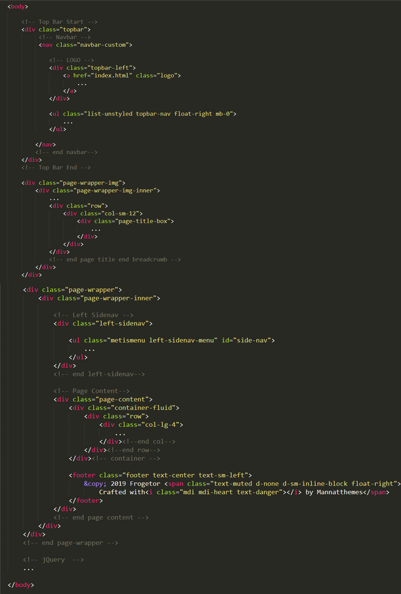

If you have any questions that are beyond the scope of this documentation, please feel free to email or contact us via my page.
Frogetor is a Bootstrap 4 admin dashboard, It is fully responsive and included awesome features to help build web applications fast and easy. The tones of well designed and developed layouts, components, elements, widgets and pages allows you to create any saas based interface, custom admin panel or dashboard application. The clean and flexible code enable you to easily customize it.
You are important for us and so please feel free to get back to me with any question or feedback.
I have tried my best to have standards and modular structure while developing the theme. Following sections are explaining the theme File & Folder, structure, html file struture and plugins.
Theme Directory
├── html files
assets/
├── css/
│ └── All css files.
├── fonts/
├── pages/
│ └── All the pages related scripts
├── images/
│ └── All images
├── plugins/
│ └── The plugins files - which are not available through bower
├── js/
│ └── All common Javascripts files
└── scss/
└── All scss files

Files are explained below:
| File | Description |
|---|---|
bootstrap.min.css
|
Frogetor uses the bootstrap v4.3.1. The core bootstrap file is being used in all the pages. |
icons.css
|
Combines various font icons. You should remove the fonts you don't plan to use from this file and recompile it. |
style.css
|
The main stylesheet file, it's being generated from less and contains all the css styles combined. |
Frogetor uses jQuery, Bootstrap JS framework(at its core) and some of the third-party plugins. There are may more third party plugin which you can use according to your needs. The css is already containing matching style for these plugins so you will not need to do anything around it.
They are explained below:
| File | Description |
|---|---|
jquery.js, bootstrap.bundle.min.js, etc.
|
These files are used at core of the theme. |
app.js
|
This is a main js file. It contains the custom JS code needed for features including layout, sidebar, etc. |
pages/*.js
|
These are the files containing pages specific code. They are mainly used for demo purpose. |
plugins/**.js
|
All supported and integrated third-party plugins are included in here. |
I've used the following resources as listed. These are some awesome creation and I am really thankful to the respective community.
Once again thank you for purchasing the theme. I am always avaialble to help you. If you have any suggestion or feature to make it more better, I am requesting you to contact me, I'll try my best to add them in future updates.
Best,
- Mannat-themes
Version 1.0.0 - 03 April 2019
Copyright © 2019 Mannat-themes.